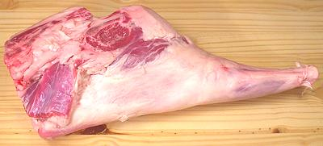

Lamb Leg

The leg shown in the photo is "shank on", but that's optional with the
meat cutter. This leg was 21 inches long, 11 inches wide, 4-1/2 inches
thick and wighed 11-1/2 pounds. It is more common for legs to be sold
asl "half legs" due to size and weight, but the meat man can probably
supply you with a whole leg if you ask.
More on Lamb / Mutton Cuts.
Buying:
These can be found in markets serving communities
from countries that use a lot of lamb: Turkey, Armenia, Middle East, North
Africa, Pakistan, etc. Legs on display will generally be half legs - you
usually have to ask the butcher for a whole one.
Cooking:
Leg meat is well exercised so it's both flavorful
and tough, so it's generally cooked by a fairly long roasting, in the oven,
on a covered grill or on a spit.
Yield:
The 11-1/2 pound whole leg in the photo at the top
yielded as per the table below. The percentages don't add up to quite 100%
due to liquid loss, measurement rounding and other factors, but it's close
enough for government work, so you engineers just try not to be anal about
it.
| Meat | 5# 4oz |
35% |
|
| Bones | 1# 12oz |
15% | For the soup pot |
| Fat | 2# 13oz |
24% |
|
| Lard | 2# 1oz |
| The fat rendered |
| Scraps | 1# 8oz |
13% | For the soup pot |
as_legz 091015 - www.clovegarden.com
©Andrew Grygus - agryg@clovegarden.com - Photos
on this page not otherwise credited © cg1
- Linking to and non-commercial use of this page permitted